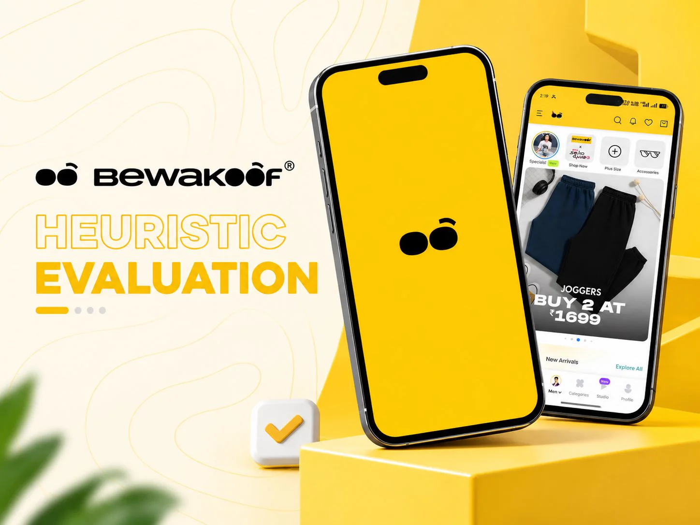

The challenge
Bewakoof is a high-traffic shopping app. The aim was to:
- Find where its funnel creates friction
- Do it quickly, before any costly user testing
What's working and what isn't across a high-traffic ecommerce funnel.

A heuristic evaluation of the Bewakoof shopping app: a structured review of what's working and what isn't across a high-traffic ecommerce funnel.
Bewakoof is a high-traffic shopping app. The aim was to:
A heuristic evaluation: an expert review of the interface against Nielsen's 10 usability heuristics. Each issue is shown as the current screen next to a proposed fix.
The screens in focus:
An independent review. Not affiliated with Bewakoof.
An independent review of a live app, so these are the checks I would use to confirm the fixes.
Open to design roles and freelance projects in graphic, UI/UX, motion and video. Send a note and I’ll reply soon.
my inbox is open, I reply faster than I should